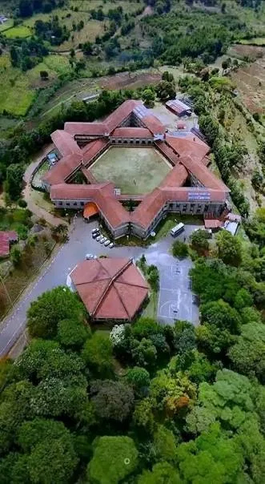
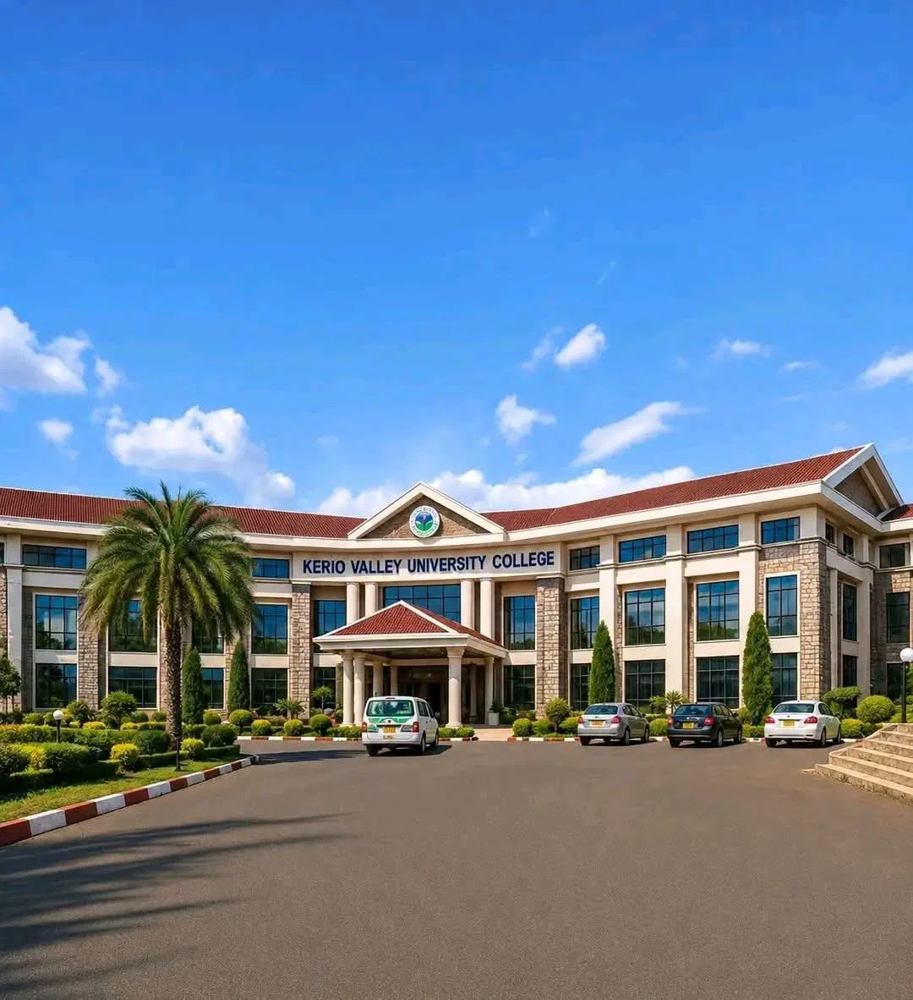

Education & learning
Provide facilities for technological, professional and scientific education, directly or in collaboration with other institutions.
 KERIO VALLEYUNIVERSITY COLLEGE
KERIO VALLEYUNIVERSITY COLLEGEEstablished under the Kerio Valley University College Order, 2026, as a constituent college of the University of Eldoret.
Paragraph 3 establishes Kerio Valley University College as a constituent college of the University defined in paragraph 2 as the University of Eldoret.
The Order was made on 16 June 2026 and appears in Kenya Gazette Supplement No. 148 dated 18 June 2026.
Source: supplied notice, paragraphs 2–3; Gazette cover and signature page. Read the notice ↗
Provide facilities for technological, professional and scientific education, directly or in collaboration with other institutions.
Advance knowledge and its practical application, disseminate research outcomes and participate in technological innovation.
Provide educational, cultural and professional services to the community and reflect equity and social justice.
Paraphrased from paragraph 4. These functions do not verify current operational provision. Read the notice ↗
The phrase “Spring of Knowledge and Innovation” appears in the supplied leadership artwork. A separately approved vision, mission, values statement and brand guide have not been supplied.
Awaiting the institution’s approved wording.
Campus addresses, facilities and an approved institutional history await confirmation.
Images supplied for this website concept.


The supplied timeline poster illustrates the public narrative around the College’s establishment. Its anticipated intake dates and other operational claims are not treated as current admissions information. The legal notice remains the source for the establishment provisions and Gazette date used on this website.
View supplied timeline poster ↗A reported CUE visit assessed facilities during the establishment process.
Read the source report ↗The supplied legal notice records the date on which the Kerio Valley University College Order, 2026 was made.
View the notice ↗Kenya Gazette Supplement No. 148 contains Legal Notice No. 105 of 2026, establishing KVUC as a constituent college of the University of Eldoret.
Explore the source library ↗Historical milestones describe the establishment process. Current admissions and programme delivery require separate confirmation.
Explore the legal notice and the supplied leadership announcement.